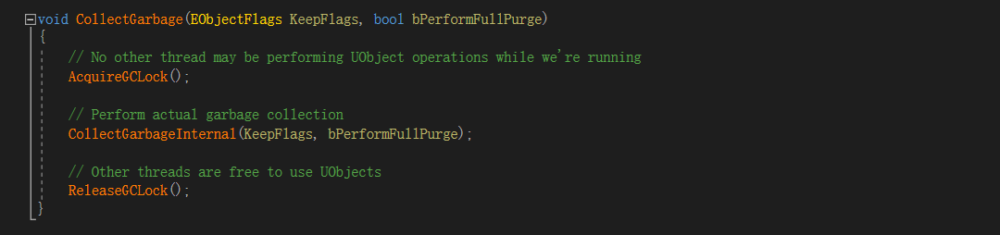
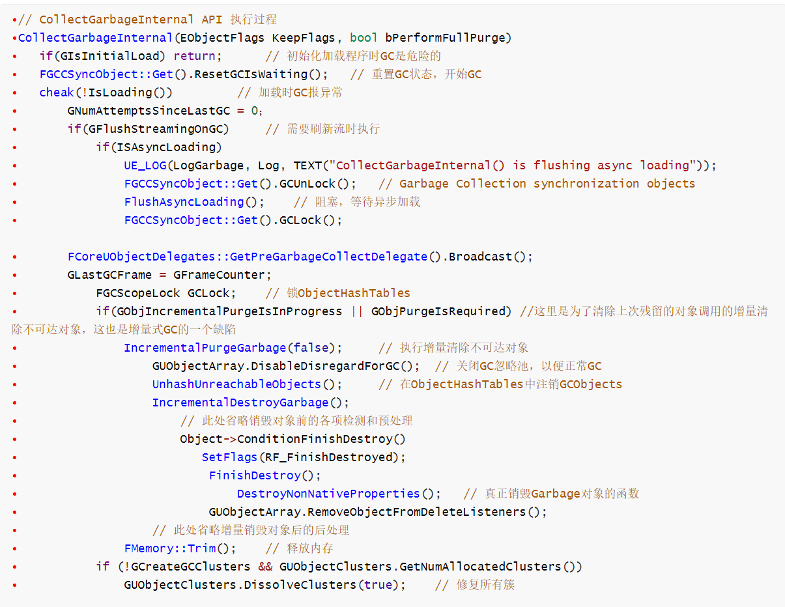
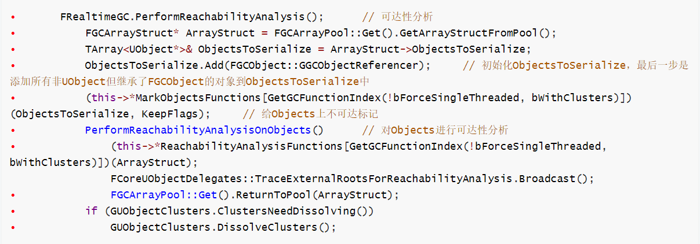
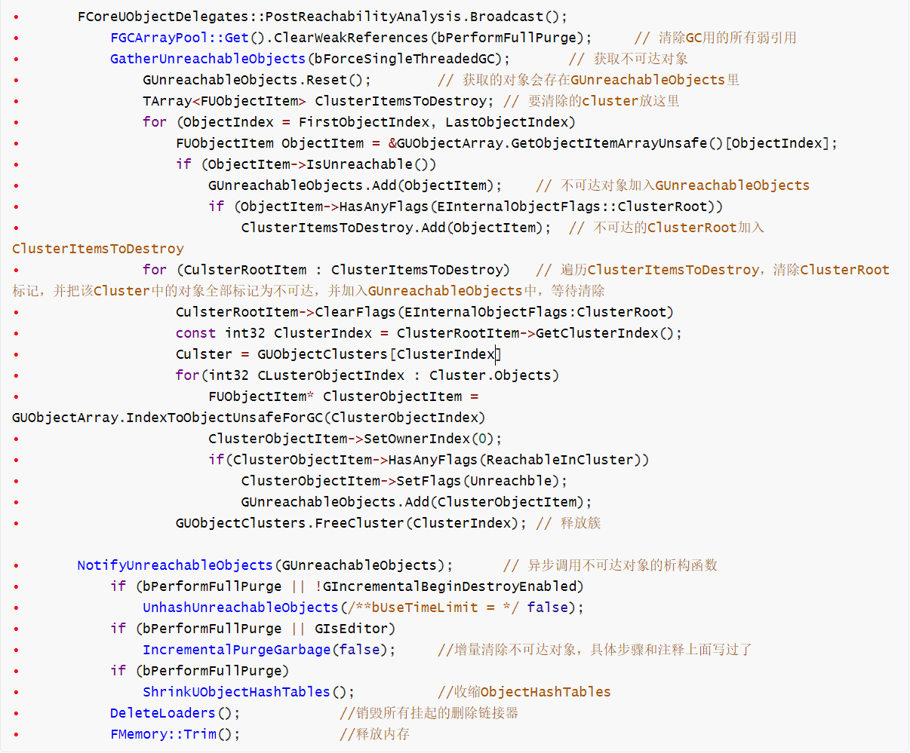

# Unreal GC 过程
简介：Unreal 的 GC 是基于 UObject 的，非 UObject 对象要继承 FGCObject 类且重载了 AddReferencedObjects 函数，才会被列入 GC 对象数组中。
以下是 CollectGarbage API 的源码：

# 解析：
- 不难发现，里面就是上了个 GC 锁，然后调用内部的 CollectGarbage 函数，最后解锁
- GC 时不能对 UObject 进行操作，因为可能会改变 UObject 的引用关系，导致 GC 出现异常（增量式 GC
- CollectGarbageInternal 的代码过长，以下是其运行过程中的接口调用，重要的步骤都有注释，请慢用～～～



# 总结：
Unreal 的 GC 是增量式的，那就免不了标记和清除两个阶段。标记就是通过遍历所有需要 GC 的对象，然后分别标记上可达或不可达，清除就是把不可达的对象给 Destroy 掉，并释放内存，基本上就是这些。当然还有一些其他操作，像挂起其他线程，判断当前是否可以 GC，在 ObjectHashTable 中注销 GarbageObject 等，都是为了保证 GC 能正常运行，优化 GC 过程的一些步骤。
# 小经验：
# 之前面试的时候被问到：智能指针是怎么 GC 的？
- 其实 Unreal 的智能指针式一个纯 C++ 类，也没有继承 FGCObject，当然是不会被列入 GC 数组中的。
# 衍生问题：那智能指针指向的 UObject 对象呢？这个怎么 GC？
- 首先 unreal 的智能指针不是所有的都能指向 UObject 的，TSharedPtr 和 TSharedRef 是不能指向 UObject 的，不能指向的原因就是这两个指针是会释放内存的，如果指向 UObject，那就会导致二次释放，引起程序崩溃
- TWeakPtr 是可以指向 UObject 的，也不参与引用计数，更不会释放这个 UObject 的内存。
- 总得来说就是，归 GC 管的对象智能指针不会管，也不能管。不归 GC 管的对象就可以用智能指针来自动释放内存。